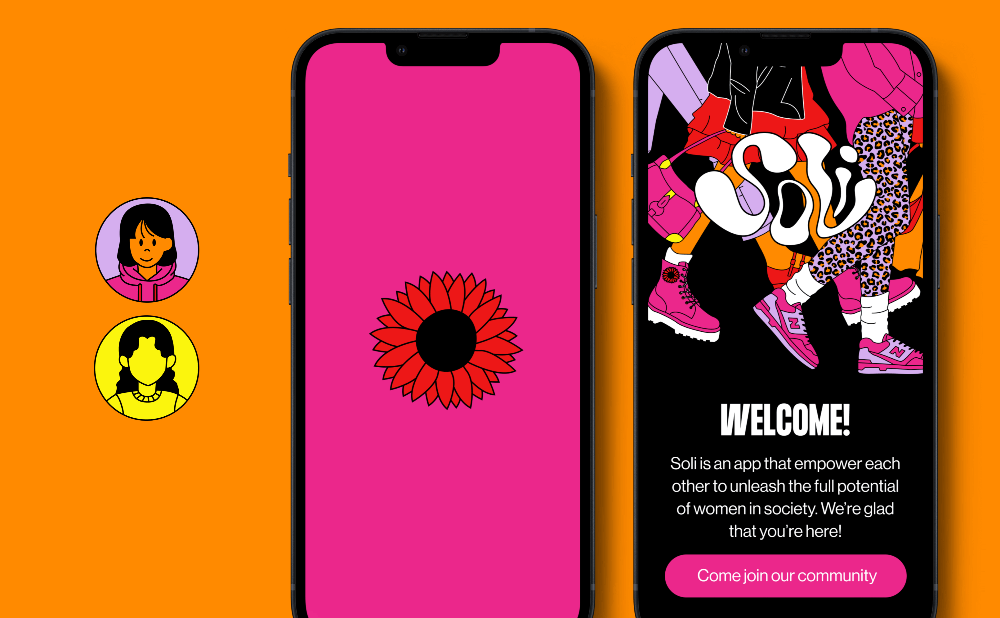

your brand sprint team must include people with authority and ownership of your company's identity. the “champion” is the essential decision maker who says the “last word.” champions know how to democratically bring everyone to the table, hear and collect all internal thoughts and transform them into actions in the decision-making junctions. in most cases, the champion is the ceo, but in some cases, the decider could be another co-founder or cmo.
create as many things as possible to make the sprint run smoothly - content is king, and everything is content. your content is content. the ui screenshots are content. and the way all of your content is ordered is also content. we'd love to see the website's content as soon as possible - your content should be ready before the sprint and before we write the brand story, as the brand story mainly functions as our brief. we're not expecting your content to be the final one, but it should be in high fidelity, knowing we'll develop and adjust it as we design. also you should run an internal branding session with as many teammates, find the gaps and work intensely on your brand strategy.
your brand sprint team must include people with authority and ownership of your company's identity. the “champion” is the essential decision maker who says the “last word.” champions know how to democratically bring everyone to the table, hear and collect all internal thoughts and transform them into actions in the decision-making junctions. in most cases, the champion is the ceo, but in some cases, the decider could be another co-founder or cmo
your brand sprint team must include people with authority and ownership of your company's identity. the “champion” is the essential decision maker who says the “last word.” champions know how to democratically bring everyone to the table, hear and collect all internal thoughts and transform them into actions in the decision-making junctions. in most cases, the champion is the ceo, but in some cases, the decider could be another co-founder or cmo
during our research phase, we delved into tons of information about gen z, leading us to a fundamental realization. gen z looks up to the '90s in the same way that we, as someone who grew up in the '90s, looked up to the '60s! we admired the '60s for its primary, genuine, and somewhat naive essence. once we located ourselves within this admiration for the '90s, everything became clearer. it's about technology, but in a primary way - everything was at its inception, with a specific visualization and tone of voice.
from vibrant color schemes to bold typography and seamlessly integrated visual elements, every aspect of our design was imbued with the essence of both nostalgia and modernity. it's this fusion that speaks to the heart of gen z, capturing their attention and empowering them to embrace their uniqueness. the color schemes, typography, and visual elements reflected this aesthetic, striking a balance between nostalgia and modernity. the color palette, while evoking a sense of nostalgia, remained empowering and inclusive, with shades of pink, orange, and red. bold typography served as a rebellion against conventional norms, embodying the spirit of protest and empowerment synonymous with gen z. illustrations and photography were seamlessly integrated, reminiscent of the 90´s magazines and wall collages. designing for gen z isn't just about aesthetics—it's about understanding, connection, and empowerment. it’s about authenticity.
